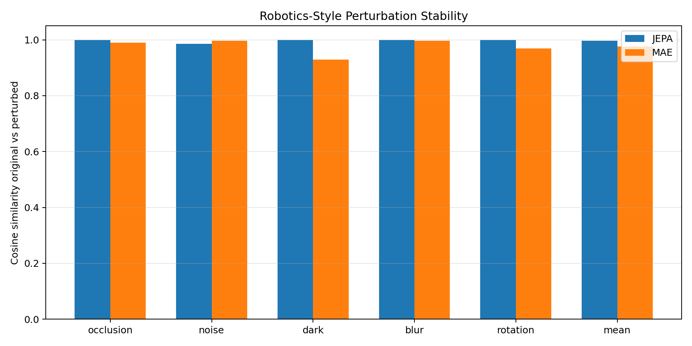
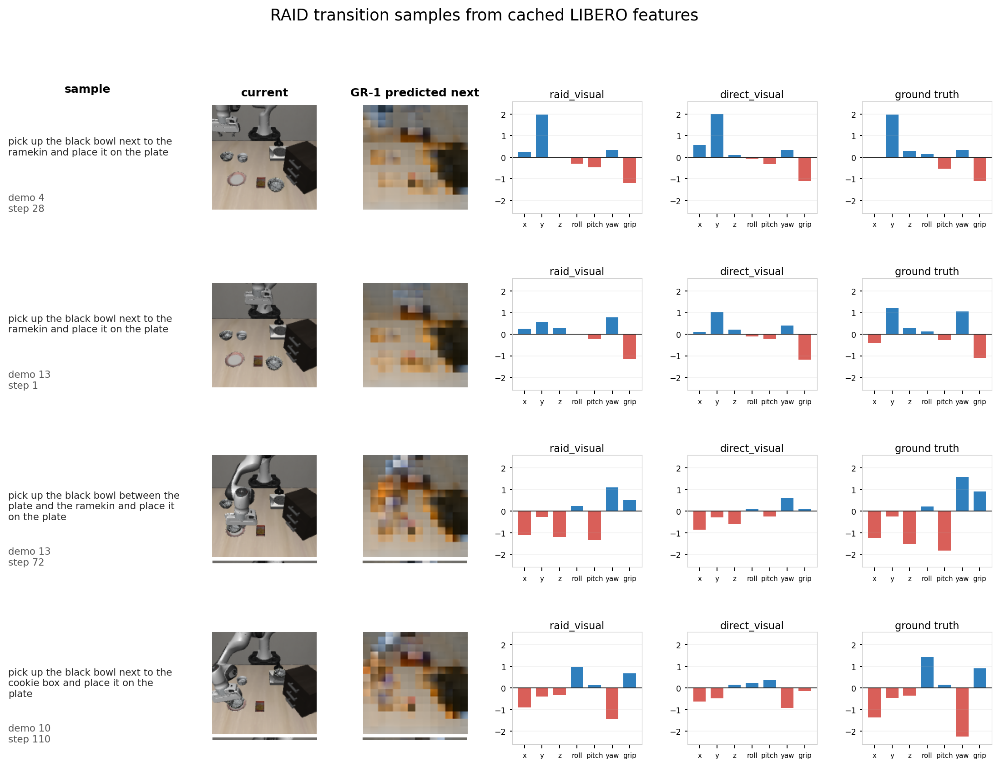
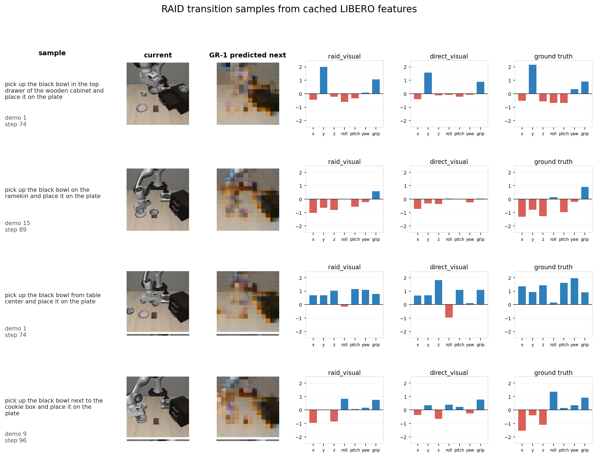
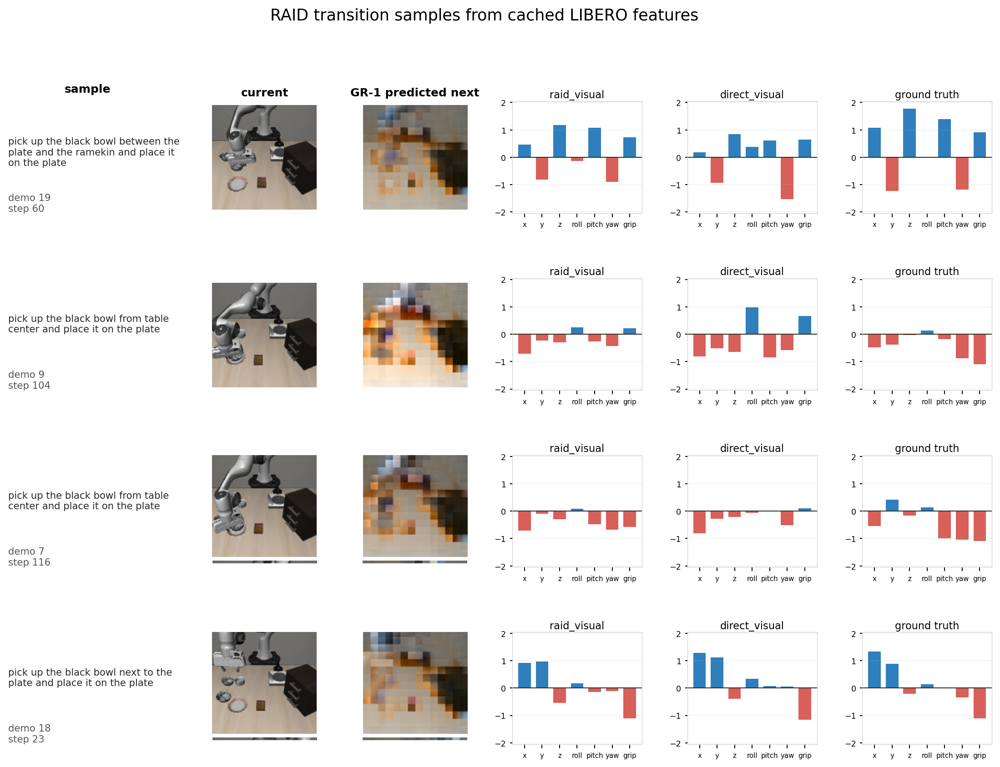
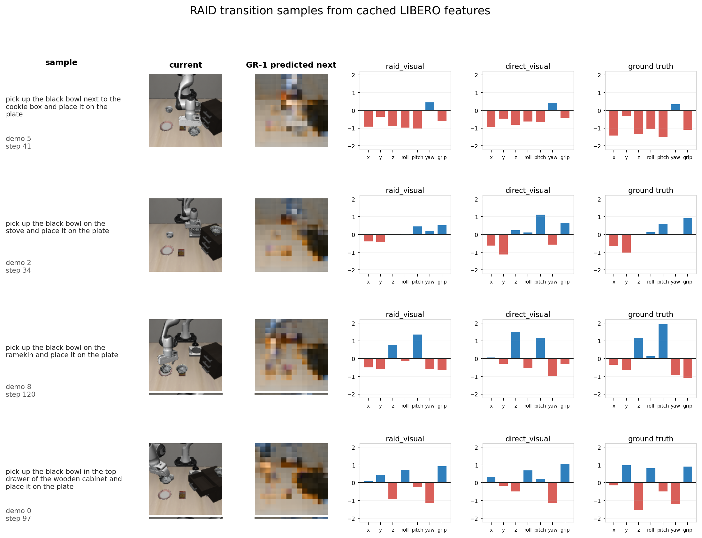

Direct visual baseline
A representative direct visual demonstration sequence for the RAID comparison.
World models and embodied AI
RAID pairs a GR-1 world-model encoder with a retrieval-augmented action decoder, using remembered demonstrations to infer the motor command behind a dreamed latent transition.
On LIBERO-Spatial with 25 demonstrations, cross-attention RAID over GR-1 features reaches 0.132 validation MSE versus 0.842 for the same visual head without retrieval.
The demonstrations have been rotated 180 degrees at the video file level so playback appears upright while the browser controls remain readable.
A representative direct visual demonstration sequence for the RAID comparison.
A representative RAID visual demonstration showing the retrieval-augmented policy behavior.
Method
GR-1 supplies a one-step-ahead dreamed feature. RAID maps the current and dreamed feature pair to a 7-DOF action by blending a direct MLP trunk with a cross-attention prior over similar demonstrated transitions.
The result is a compositional policy: the world model handles latent future prediction, while retrieval supplies concrete action templates from the demonstration memory bank.

A project visualization used to inspect robotic behavior under perturbation and transition uncertainty.
Four compact qualitative grids from the report appendix. The visual observation cells have been rotated 180 degrees while the labels and action charts remain readable.

Current frame, GR-1 predicted next frame, RAID action, direct visual action, and ground truth action comparisons.

Qualitative transition samples from the 200-demo LIBERO-Spatial setting.

RAID predictions are compared with the direct baseline across sampled transitions.

A final compact grid showing the sign and relative magnitude of predicted actions.
Supplementary site